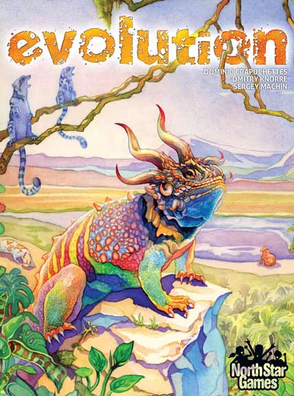
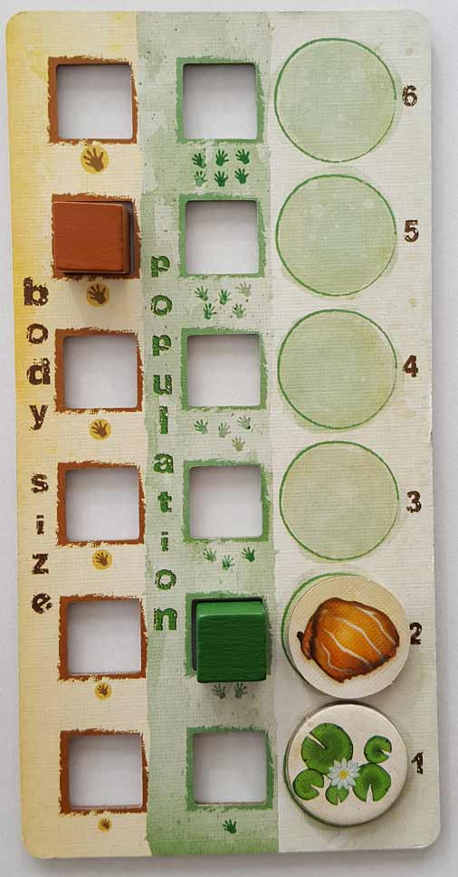
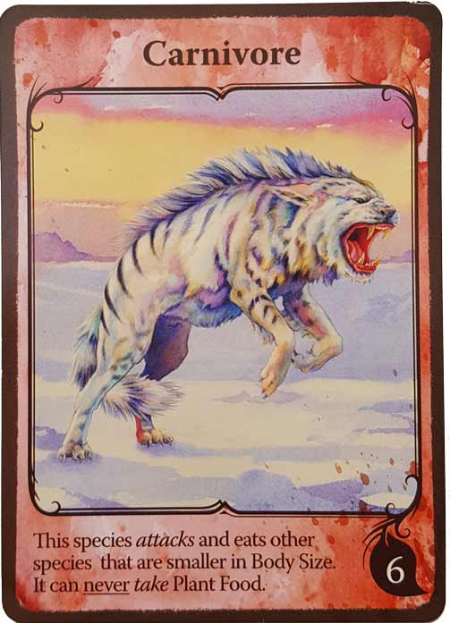
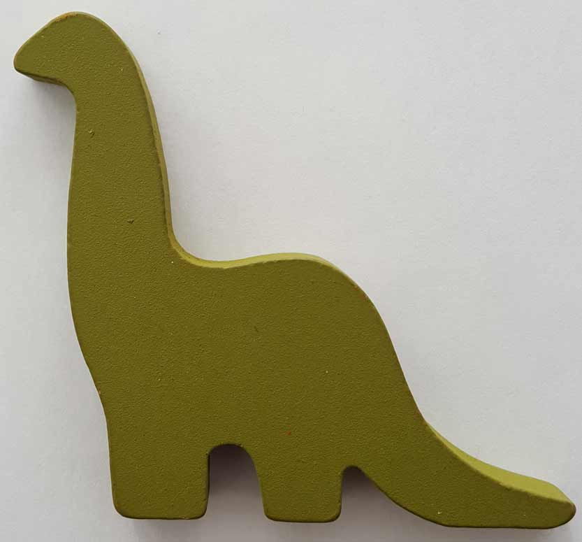
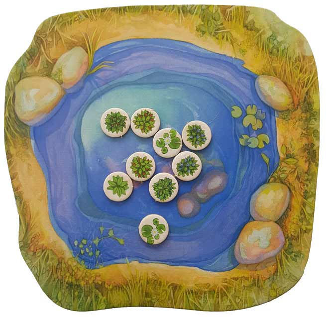
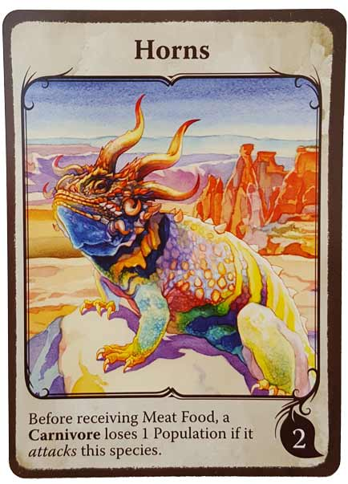
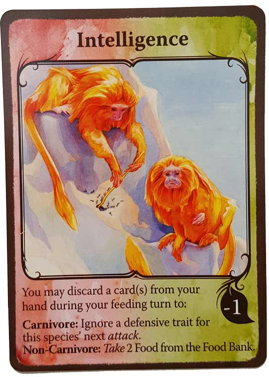

In this Evolution review, we examine the animal-themed, hand management board game from North Star Games. Designed by Dominic Crapuchettes, Dmitry Knorre, and Sergey Machin, Evolution has its players building up a number of new species while simultaneously ensuring that they have enough food to survive. You can never sleep for a moment because in this game, the carnivores are always lurking, waiting to strike. For more on Evolution, check out our review below!

D reviews Evolution
 (Author’s
note: this review is meant to accompany our gameplay video and will not
go in-depth on the game’s rules. If you’re interested in learning how
the game is played, please watch the video. It’s not bad.)
(Author’s
note: this review is meant to accompany our gameplay video and will not
go in-depth on the game’s rules. If you’re interested in learning how
the game is played, please watch the video. It’s not bad.)
Despite being nearly traumatized by the lies of White Wilderness when I was a small child, I’ve always had a deep fondness for “edutainment” that focuses on this planet’s countless, diverse animal species. For example, I’ll watch basically anything narrated by David Attenborough, and I have strong feelings about what I perceive to be a precipitous drop in quality of the annual Shark Week programming. One series that has always particularly stood out in my mind is Walking with Dinosaurs, which was produced by the BBC at the tail end of the dino-crazy 90s. I’ve never been a fan of the slasher-style violence of the Jurassic Park films, but Walking with Dinosaurs was able to contextualize the violence of these creatures – without losing the sense of wonder that they evoke – in a way that made it compatible with my 11 year-old brain. Predators didn’t hunt for food just because they could; they did it because they had to. And the ways the prey species adapted to counter their predators was equally necessary and interesting.
Memories of watching that show and the feelings it evoked came flooding back to me while playing this week’s game, Evolution, which deals with the growth and attempted survival of fictional animal species. It nails its theme about as strongly as I can recall any game doing, although the way it achieves this is perhaps non-traditional. I’ve seen some people claim that Evolution is thematically light, and I suspect this is because it doesn’t do much to incorporate its theme visually. There are no figures or representations of your species beyond the identical boards and cards, so you don’t actually see your animals growing and adapting, nor does the game care about playing out the hunting that’s done by its carnivores. Everything simply happens, and the numbers change. I can see how this could be disappointing to some people, and having a visualization of the species you’ve been creating would be really cool, but that’s really only practical for a digital version of the game.
Instead, Evolution executes its theme purely through its mechanics. It takes some imagination, but the way each species grows or shrinks, thrives or declines, hunts or defends recreates an accelerated, but believable facsimile of evolution as we know it. And it’s pretty remarkable. I honestly felt bad for my species at the very end of our game (video spoilers ahead), as their populations dwindled to near-extinction because of my error in judgment. Grade school D would have loved this as a supplemental way to learn about biology and evolution, and I’m comfortable in saying that this game should work fantastically as a teaching tool. But how does Evolution fare as a game purely from an entertainment perspective? After all, Oregon Trail was fun when I was playing it in school, but it’s not a video game I’d likely have given much attention to in my free time. Overall, I’d say Evolution easily avoids contracting dysentery, but it’s not without a bellyache here and there.
The game’s major problem is its variety and balance, which are tied closely together. It boasts “over 4000 ways to evolve your species,” but most of those will lead to a quick death. There are seventeen different kinds of traits that can be assigned to species, and while all of them can be useful under the right circumstances, some are clearly superior to others in most cases. Every species realistically needs an eating-focused trait in order to survive long-term, and this should generally be paired with either two defensive traits or two carnivorous ones. To the game’s credit, this makes biological sense, but it does hinder its variety and long-term replayability. I will throw out that there have been several expansions for the game that I’ve heard may alleviate this issue to some degree, but I haven’t played them and thus cannot comment on them. Otherwise, my only other complaint about the game is that it’s a little dry. It has more conflict than your standard Eurogame if at least one player is a carnivore, but there’s really not much drama. The food tokens are hidden to provide a little bit at the end of the game, but it’s generally pretty easy to tell who’s been doing well and who hasn’t.
The overall production of the game is quite nice. There aren’t too many components, but everything included seems decently made. The first player token – a large, brontosaurus-shaped piece of wood – is pretty great. The technicolor art style may not be to everyone’s taste, but I love it. Not only do I like how it looks (and it should appeal to kids, too), but it does a good job of making everything feel slightly fantastical, which is a good choice for a game that is otherwise a little stuffy. The rulebook is similarly filled with a nice bit of personality and is generally very coherent and thorough, which are the two most important traits for any rulebook. At no point did we feel unsure about if we were interpreting a rule correctly.
I’m going to recommend Evolution, although it’s not going to be for everyone. This isn’t one of those games where the premise might be uninteresting to you, but you enjoy it anyway because of its mechanics. Evolution’s premise is its mechanics, and I think it knocks that aspect out of the park. So if the idea of the game doesn’t sound appealing to you, give it a pass. But if you’re like me and have an interest in biology and zoology (and board games), I think you should try it. It’s far from perfect, but it’s pretty unique.
D’s Rating: Three and One-Half Stars out of Five.
Will reviews Evolution
 To
me, it seems that more and more these days, games are built around
their mechanics without any consideration to theme. And while the more
abstract games don’t have to worry about this too much, most other games
do and still fall short thematically. This brings me to Evolution, a board game published by North Star Games. Evolution
seems to be a game that was designed around both its mechanics and its
theme, and it was done so rather evenly. I really don’t think that this
game would work with any other theme, and as thus, it feels kind of
special. Unfortunately, some of the mechanics weren’t as well executed,
holding this game back from reaching its full potential.
To
me, it seems that more and more these days, games are built around
their mechanics without any consideration to theme. And while the more
abstract games don’t have to worry about this too much, most other games
do and still fall short thematically. This brings me to Evolution, a board game published by North Star Games. Evolution
seems to be a game that was designed around both its mechanics and its
theme, and it was done so rather evenly. I really don’t think that this
game would work with any other theme, and as thus, it feels kind of
special. Unfortunately, some of the mechanics weren’t as well executed,
holding this game back from reaching its full potential.
Conceptually, I appreciate a lot of the design choices that were made for Evolution, both in regards to the rules and the components. Basically, you’re trying to build up species so that they can eat as much as possible. Food is represented by little cardboard discs that are each worth one point at the end of the game, so collecting these is the primary way you’ll score victory points. Most of the food goes to the Watering Hole, where the herbivores go to feast. Of all the components in the game, I liked the Watering Hole the most, as it’s large, colorful, and attractive. Overall, I’m not the biggest fan of the game’s artwork though – it’s kind of bland to me. While the Watering Hole is cool looking, the rest of the art comes off as being too basic, as if it were featured in an educational pamphlet or something. Sure, there’s a technicolor style to it, but I think I would’ve preferred a different aesthetic for Evolution. Still, the art does match the theme perfectly, the components function well, and the sizeable first player token is definitely awesome.
As I just explained, the primary goal of this game is to feed your species the most, but there’s definitely more to it than that. Evolution is mainly played through its cards, which are utilized in a multitude of ways, and I found this to be ingenious. The cards can be discarded in exchange for new species or to upgrade an existing species’ population or body size. They’re also used to determine how much food is going to be placed on the Watering Hole, as well as what traits your species are going to exhibit. So yeah, the majority of the game plays out on the cards – it’s really smart design. Of all their uses, the most important aspect of the cards is their traits. Some of these traits allow you to collect more food, while others provide defenses against carnivores. If you manage to organize your traits in an intelligent way, you can force your opponents to ignore you. If you play them differently, you might be able to collect a load of food during the Feeding phase and starve your opponents’ herbivore species. Because of these cards, Evolution’s strategies really do present themselves in a variety of ways. And again, the gameplay here impeccably fits with the theme, representing the cutthroat nature of the ever-evolving wild.
On the other hand, the card-driven gameplay occasionally creates a number of problems. As with any card-drafting game, there’s a great deal of luck involved. Let’s say that one player has a carnivore and is looking to feed it. As they go around the table, they’ll almost always choose the prey with the least defensive traits. Given the randomness of card draws, there’s always a chance that the weakest prey will belong to you and not your opponents. And if you’re like me, you’ll be unable to draw the defensive cards you need while your opponents keep getting them. Next thing you know, your species are being eaten and going extinct, while the other players hoard the food and thusly, all of the points. In this case, you might unintentionally “kingmake” the player with the strongest carnivore(s), which is pretty dumb if you ask me. Conversely, if you have a carnivore and never draw the Intelligence card that allows you ignore defensive traits, then that bad luck will ruin your chances of victory as well. I understand that luck and randomness are inherent to drafting games, but the fact is, we knew who was going to win each session of Evolution we’ve played by the halfway point or so. That’s how much luck and subsequent kingmaking can take over this game.
Other than that, there’s not much else to say. In truth, I haven’t decided yet if the randomness of the card-drafting ruins the rest of the experience for me or not. Evolution does feature an effective theme and a lot of savvy design choices, such as the way the trait cards can stack. The things that are in your control, like how to best use your cards, are a lot of fun. However, the things that are out of your control kind of spoil it all. And yet I remain conflicted because I know that, in an ideal session, the luck will distribute evenly and the final score will be close. That session of Evolution would be truly enjoyable in every way, and I hope I get to experience it one day. Until then, I guess I’ll have to remain skeptically optimistic that this game will finally reach its potential.
I give Evolution a: B-
Evolution Review – Board Crazy’s Ratings
Leave a Reply
You must be logged in to post a comment.